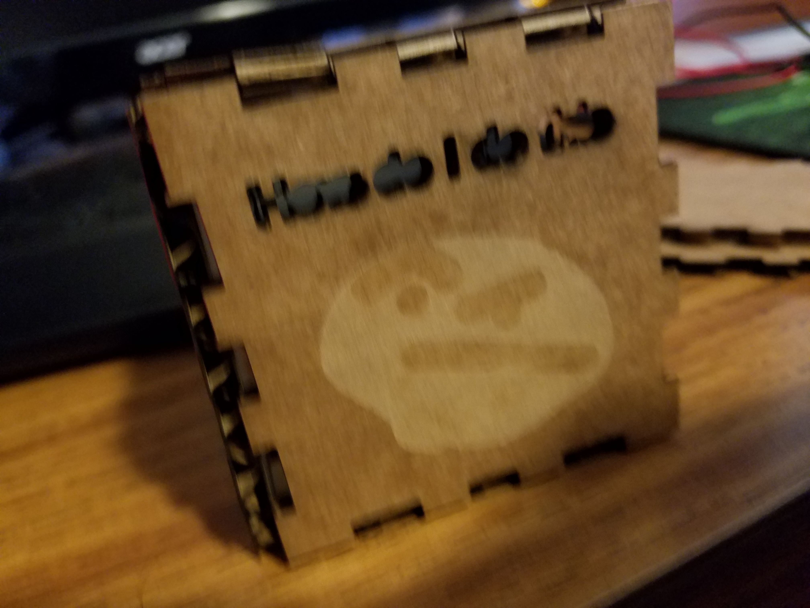

Making A Cardboard Box with Designs on It
I went to the website called MakerCase and decided that I wanted to make a cube with finger joints.
I got the file, opened it on CorelDraw in order to vector and rastor on it.
To vector, I put some text on the box and made it hairlined.
To rastor, I created a bitmap of an image I wanted to make.
Then I went to the laser cutter, focused it and watched it as it cut out my box.
You can see the assembled box to the right.

3D Model of My Head on a Pedestal
So, I used 3D Knockout Scanner and with the help of Mr. Gerber, scanned my head.
The head was a .obj file so I put it in AutoDesk meshimixer and imported a pedestal file with it.
I had to fix some holes and bloated parts of the head and append the head and the pedestal together.
Then I exported it as a STL file and put it in Makerbot in order to print the model
On the bottom, you can see how the 3D model print turned out.


File Download
My Head File (.stl)
Pedestal File (.stl)
Final File (.stl)
Making an Object that can't Be Made Subtractively
I thought about it a bit and made an object that can't be made subtractively.
It is a hollow sphere with a hole in it that is within a cube that has open circular faces.
It acts kind of like a fidget cube.